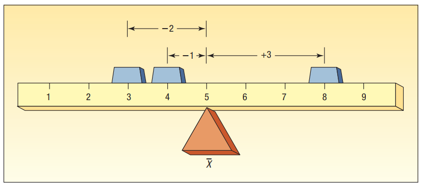
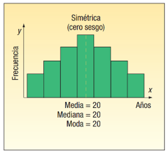
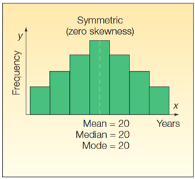
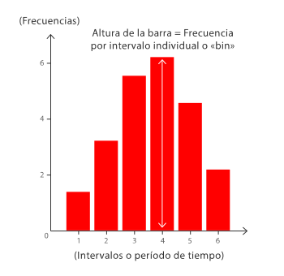
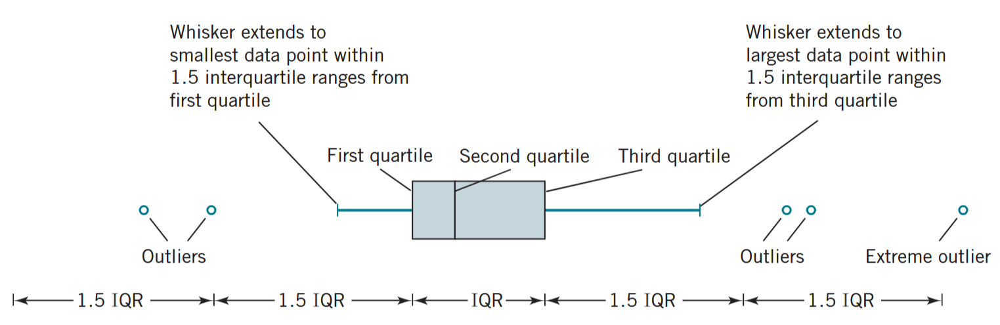
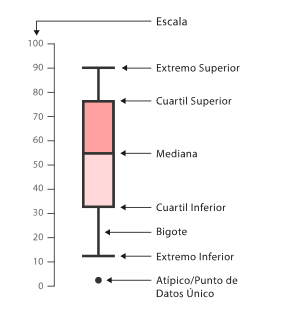
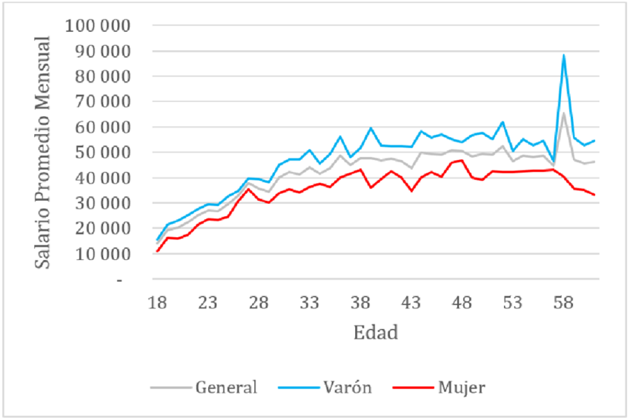

| Sabor | Votos |
|---|---|
| Chocolate | 103 |
| Vainilla | 92 |
| Fresa | 72 |
Descripción de datos
Versión PDF
II-1120 Estadística para Ingeniería Industrial I
Steven García Goñi
steven.garciagoni@ucr.ac.cr
steven.garciagoni@ucr.ac.cr
18 de febrero de 2026
Agenda
- Preguntas generadoras
- Visualización de datos
- Técnicas para describir:
- Variables categóricas
- Variables cuantitativas
- Visualizaciones recomendadas
- Consejos para la presentación de datos
- Gráficos tendenciosos o erróneos
- Cuadros y gráficos estadísticos
Preguntas generadoras
- ¿Cuándo usar cada tipo de técnicas para describir variables?
- ¿Cuándo usar las medidas de posición, dispersión y forma?
- ¿Por qué es importante estudiar la dispersión de los datos?
- ¿Por qué es importante estudiar la forma de los datos?
- ¿Cómo escoger el gráfico adecuado para el tipo de datos que tengo?
¡Recuerde!
Las variables se pueden clasificar por tipo: Cuantitativa y Cualitativa, así como por niveles de medición: Nominal, Ordinal, Intervalo y Razón.
Éstas determinan como se deben recoger y analizar lo datos. Es decir, rigen los cálculos que se deben llevar a cabo.
La validez de las conclusiones depende de la fiabilidad de la recolección de datos y de las técnicas de análisis empleadas.

Visualización de datos
Visualización
La visualización es una actividad humana fundamental. Una buena visualización mostrará cosas que no se esperaban o hará surgir nuevas preguntas acerca de los datos. También puede dar pistas acerca de si se están haciendo las preguntas equivocadas o si se necesita recolectar datos diferentes.
“Un simple gráfico ha brindado más información a la mente del analista de datos que cualquier otro dispositivo”. - John Tukey
Medidas para una variable cualitativa
Ejemplo
- Un usuario en Reddit (enlace) pregunta a la comunidad:
- ¿Cuál es el mejor sabor de fresco leche? Con lo que obtiene estos resultados:
- Discuta con la persona docente y sus compañeros y compañeras:
- ¿Qué nivel de medición fue usado?
- ¿Cuál es la muestra? Descríbala
- ¿Cuál es la población?
- ¿Qué tipo de muestreo fue usado?
- ¿Este tipo de recolección de datos introduce algún sesgo?
Ejemplo
- Las variables categóricas, de nivel nominal, solo pueden ser agrupadas y contadas (esto se conoce como tabla de frecuencia). Además, se pueden obtener proporciones.
| Sabor | Votos | Proporción |
|---|---|---|
| Chocolate | 103 | 0.386 |
| Vainilla | 92 | 0.345 |
| Fresa | 72 | 0.270 |
Ejemplo - Visualización
Las variables categóricas se pueden representar de muchas formas. Dos de ellas son:
¿Cuál de las dos formas es más apropiada?
¡Importante!
- Estos conocimientos se van a ir construyendo poco a poco.
- Para muestras y poblaciones se usan notaciones diferentes.
- Preste atención a lo largo de este y otros cursos, sobre todo de esta área de conocimiento, a las diferentes notaciones. Por ejemplo, la proporción muestral se denota con \(\hat{p}\) mientras que la poblacional con \(p\). De la misma forma el promedio muestral es \(\bar{x}\) y el poblacional es \(\mu\).
- En este sentido, recuerde que hay una diferencia entre estimador y parámetro.
Otro ejemplo
- El Instituto Costarricense de Turismo (ICT) realiza encuestas para determinar los perfiles de los turistas que ingresan por distintas vías al país.
- Para las personas que ingresan vía aeropuerto se obtiene, entre otros, la variable: Motivo del viaje.
- Discuta: ¿Por qué para un profesional de la ingeniería industrial estudiar esta variable puede ser importante?
Otro ejemplo
- El ICT informa que la encuesta se realiza durante todo el año y de forma aleatoria. Consiguiendo la respuesta de 5 094 personas.
- ¿Cuál es la población?
- ¿Existe un sesgo evidente en la recolección de los datos?

| Motivo | Porcentaje |
|---|---|
| Vacaciones | 65.10 |
| Visita a familiares | 9.60 |
| Religión/peregrinaciones | 6.40 |
| Educación | 5.90 |
| Salud | 0.60 |
| Compras | 0.30 |
| Incentivo | 0.04 |
| Otros motivos personales | 1.00 |
| Reuniones de negocios | 8.07 |
| Conferencias y congresos | 1.07 |
| Actividades deportivas/culturales | 2.00 |
Ejemplo - Visualización
¿Qué opina de este gráfico?
¿Resulta más claro este?
Ejemplo - Visualización
¿Esta es mejor opción?
El ejercicio de visualización de datos es, en el fondo, un acto profundamente humano; pues toma algo “abstracto” como números, distribuciones, incertidumbres, entre otros y los transmite en algo con significado. En la comunicación visual la simplicidad es importante.
La perfección se alcanza, no cuando no hay nada más que añadir, sino cuando no hay nada más que quitar - Antoine de Saint-Exupery
Medidas para dos variables cualitativas
Tablas de contingencia
Son también conocidas como “tabla de doble entrada”.
Se usan para mostrar la relación que existe entre dos variables categóricas.
- Las tablas de contingencia, además de para describir datos, tienen muchas aplicaciones en estadística inferencial.
Las categorías de una de las variables son las filas y las de la otra variable son las columnas. Los cruces son el conteo de lso casos en los que ocurren ambas variables simultáneamente.
Ejemplo
- Mediante una encuesta se obtiene información respecto a la siguiente pregunta:
- ¿Hay un verdadero amor para cada persona?
- Las respuestas obtenidas se organizan en una tabla de contingencia. Lo que facilita su representación.
| Respuesta | Hombre | Mujer | Total |
|---|---|---|---|
| A favor | 372 | 363 | 735 |
| En contra | 807 | 1005 | 1812 |
| No lo sé | 34 | 44 | 78 |
| Total | 1213 | 1412 | 2625 |
Práctica
- ¿Qué proporción de mujeres está de acuerdo?
- \(\frac{363}{1412}=0.26\)
- ¿Qué proporción de las personas que están de acuerdo son mujeres?
- \(\frac{363}{735}=0.49\)
- ¿Qué proporción de los hombres está de acuerdo?
- \(\frac{372}{1213}=0.31\)
- ¿Es más probable que las mujeres o los hombres crean en el amor verdadero?
- Hombres
- ¿Qué proporción de las personas encuestadas son mujeres?
- \(\frac{1412}{2625}=0.54\)
¿Cómo visualizar dos categorías?
Gráficos de barras
Gráficos de barras apiladas
Medidas para una o más variables cuantitativas
¿Cómo se describe una variable cuantitativa?
- Hay tres formas de hacerlo:
- Medidas de ubicación, posición o tendencia central
- Medidas de dispersión
- Medidas de forma
- Advertencia: Estas medidas también pueden usar para dos o más variables cuantitativas, categorizadas por variables cualitativas.
- Por ejemplo: salario promedio por género.
Médidas de posición
- Están diseñadas para brindar a la persona analista algunos valores cuantitativos de la ubicación central (u otros) de los datos en una población o en una muestra.
1. Media o promedio
- Sirve como medida para expresar el centro de una distribución.
- A modo de analogía, la media se puede interpretar como un “centro de gravedad”.
- Esta es la principal desventaja de la media: se ve MUY afectada por la presencia de valores extremos.
- No es una práctica ética eliminar valores extremos sin justificarlo y reportarlo.

Por ejemplo
- En una muestra, la media de 5 números aproximadamente similares: 4, 3, 5, 4 y 6 es \(\bar{x}=4.4\).
- Esto sería como una regla , “uniforme” en toda la superficie, por lo que el centro de gravedad está en el “centro”.
- La media de 5 números con uno sumamente distinto (valor extremo): 2, 3, 5, 4 y 25 es \(\bar{x}=8.8\).
- Esto sería como un martillo , cargado en un extremo.
- También puede darse el caso de que haya valores extremos en ambas direcciones, comportándose como una mancuerna .
- Por ejemplo: 2, 9, 12, 8, 11, 35 tiene como media \(\bar{x}=12.83\)
1. Media o promedio - Fórmulas
Poblacional
\[ \mu=\frac{\sum_{i=1}^N x_i}{N} \]
Siendo \(\mu\) el promedio, \(x_i\) los valores individuales y \(N\) la cantidad de datos en la población.
En este sentido \(\mu\) es un parámetro y \(\bar{x}\) es un estimador.
Muestral
- Note el cambio en la notación (los símbolos). La notación es muy importante para esta área de conocimiento.
\[ \bar{x}=\frac{\sum_{i=1}^n x_i}{n} \]
- Siendo \(\bar{x}\) el promedio, \(x_i\) los valores individuales y \(n\) la cantidad de datos en la muestra.
Media geométrica y armónica
1.2 Geométrica (G)
- Es un tipo de media que se calcula como la raíz n-esima del producto de un conjunto de número estrictamente positivos
- Se suele usar para calcular medias sobre porcentajes. Es menos sensible a datos extremos.
\[\bar{x}_G=(x_1 \cdot x_2 \cdots x_n)^\frac{1}{n}\]
1.3 Armónica (H)
- Es un tipo de media que es igual al número de elementos de un grupo de cifras entre la suma de los inversos de cada una de esas cifras.
- Se suele usar con velocidades, tiempos, entre otros. También es menos sensible a datos extremos y solo funciona en números positivos.
\[ \bar{x}_H=\frac{n}{\frac{1}{x_1} + \frac{1}{x_2} + \cdots +\frac{1}{x_n}} \]
1.4 Media ponderada
- Constituye un caso especial de la media, se presenta cuando hay varias observaciones con el mismo valor.
- Suponga que en Hangar se venden 3 tipos de café: pequeño, mediano y grande. En un momento particular se venden 3 pequeños, 2 medianos y 3 grandes. ¿Cuál es el promedio de las ventas?
- Note que es igual a como se calcula el promedio ponderado de matrícula
Muestral
- \[\bar{x}=\frac{\sum_{i=1}^n w_i\cdot x_i}{\sum_{i=1}^n w_i}\]
Poblacional
- \[\bar{x}=\frac{\sum_{i=1}^N w_i\cdot x_i}{\sum_{i=1}^N w_i}\]
Media ponderada - Ejemplo
- Resolviendo las ecuaciones:
| Presentación | Ventas | Precio | Promedio de ventas |
|---|---|---|---|
| Pequeño | 3 | 500 | 1500 |
| Mediano | 2 | 700 | 1400 |
| Grande | 3 | 900 | 2700 |
| Total | 8 | 2100 | 5600 |
- Se obtiene un promedio ponderado de \(\bar{x}_w=\frac{5600}{8}=700\) colones.
1.5 Media recortada
- Como se ha enfatizado, la media es bastante sensible a un solo valor extremo.
- La media recortada se calcula “quitando” cierto porcentaje de los valores mayores y menores del conjunto de datos.
- Se eliminan \(k\) valores de ambos extremos, no solo de uno.
- \(\bar{x}_{\text{rec}} = \frac{1}{n - 2k} \sum_{i = k+1}^{n-k} x_{(i)}\)
- Por ejemplo, una media recortada al 10 % se calcula eliminando tanto el 10 % de los valores menores como el 10 % de los valores mayores. Y se calcula el promedio de los valores “sobrevivientes”.
- Si se tienen 7 datos y se elige un recorte de 10 %, \(k=7\cdot 0.1=0.7=0\) la media recortada sería igual a la media, pues no se eliminarían datos, si se elige 20 %, \(k=7\cdot 0.2=1.4=1\) se eliminaría 1 dato en cada extremo (el menor y el mayor).
2. Mediana
- Sirve también como medida para expresar el centro de una distribución. No se ve afectada significativamente por valores extremos.
- Cuando el conjunto de datos contiene uno o dos valores muy grandes o muy pequeños la media NO RESULTA REPRESENTATIVA.
- Es en estos casos en los que la mediana es usada para describir el centro de los datos.
Ejemplo

¿Alguna vez se preguntó por el salario en su carrera?
La gran mayoría de estudios responden al salario promedio. Inlcusive, muchos de ustedes durante las ferias vocacionales realizan esta pregunta.
¿Eso está bien? La respuesta es ¡no! los salarios siempre tienen valores extremos.
El problema del promedio vs la mediana
- Por esto es importante, en algunos conjuntos de datos, estimar la mediana en lugar de la media.
- OJO: esto no es una “receta”, cada contexto se analiza en consecuencia.
- Entonces, ¿El salario promedio es adecuado?
2. Mediana - Fórmulas
Poblacional
Es literalmente el valor medio de un conjunto de datos ordenados de menor a mayor.
\[ \widetilde{X} = \begin{cases} x_{\frac{N+1}{2}} & \text{si N es impar} \\ \frac{1}{2} \cdot (x_{\frac{N}{2}}+x_{\frac{N}{2}+1}) & \text{si N es par} \end{cases} \]
Siendo \(\tilde{x}\) la mediana.
En este sentido \(\widetilde{X}\) es un parámetro y \(\tilde{x}\) es un estimador.
Muestral
\[ \tilde{x} = \begin{cases} x_{\frac{n+1}{2}} & \text{si n es impar} \\ \frac{1}{2} \cdot (x_{\frac{n}{2}}+x_{\frac{n}{2}+1}) & \text{si n es par} \end{cases} \]
Ejemplo
Por ejemplo, en estos valores ordenados:
| valores | 29 | 31 | 35 | 39 | 39 | 40 | 43 | 44 | 44 | 52 |
| Posición | 1 | 2 | 3 | 4 | 5 | 6 | 7 | 8 | 9 | 10 |
La mediana es:
\[\tilde{x}=\frac{1}{2} \cdot (x_{\frac{10}{2}}+x_{\frac{10}{2}+1}) \\ \tilde{x} =\frac{1}{2}\cdot (39 + 40) \\ \tilde{x} =39.5\]

3. Moda
Es el valor del conjunto de datos que aparece con mayor frecuencia. Al igual que con la mediana y a diferencia de la media, los valores extremos no afectan a la moda.
La moda solo se usa con propósitos descriptivos (es decir, no para hacer inferencias), ya que varía más entre muestras que la media o la mediana.
En simple, es el valor que más repite en una distribución de datos. Como tal no tiene fórmula, pues se trata de un simple conteo.
Es posible que haya conjuntos de datos sin moda o con varias modas.
4. Cuantiles
- Dividen el conjunto de datos en partes iguales. El procedimiento manual siempre inicia con ordenar los datos de menor a mayor (en este sentido se sigue la misma lógica de cálculo que en la mediana, pues esta es un caso de los cuantiles). Y tomar decisiones si la cantidad de datos es par o impar.
- Percentil (P): divide a los datos en 100 partes iguales
- Quintil: divide a los datos en 5 partes iguales
- Cuartil (Q): divide a los datos en 4 partes iguales
- Mediana: divide a los datos en 2 partes iguales El \(P_50\) es igual al \(Q_2\) que es igual a la mediana (\(\tilde{x}\)).
¿Cómo se interpretan?
- Por ejemplo, para el siguiente conjunto de datos el \(Q_1\) es 35
- 29, 31, 35, 39, 40, 43, 44, 44, 52
- En Excel usamos
QUARTILE.INCen lugar deQUARTILE.EXC, si se usaQUARTILE.EXCel resultado sería 33 y no 35. La funciónQUARTILE.EXCexcluye valores extremos del conjunto de datos.
- En Excel usamos
- 29, 31, 35, 39, 40, 43, 44, 44, 52
- Interpretación:
- El 25 % de los datos se encuentran por debajo de 35.
- Calcule e interprete otros cuantiles.
Algunas equivalencias
- \(P_{25}=Q_1\)
- \(P_{50}=Q_2=\tilde{x}\)
- \(P_{75}=Q_3\)
- \(P_{20}=Quintil_1\)
- \(P_{40}=Quintil_2\)
- \(P_{60}=Quintil_3\)
- \(P_{80}=Quintil_4\)
Médidas de dispersión o variabilidad
La variabilidad de una muestra desempeña un papel importante en el análisis de datos. La variabilidad de procesos y productos es un hecho real en los sistemas científicos y de ingeniería: el control o la reducción de la variabilidad de un proceso a menudo es una fuente de mayores dificultades.
Las medidas de tendencia central o posición siempre deben acompañarse de medidas de variablidad.
Rangos
1. Rango
Son las medidas de variabilidad más simples.
El defecto o desventaja de los rangos es que depende únicamente de dos valores, y por ende es sensible a si estos son extremos en comparación al resto del conjunto de datos.
Se refiere a la diferencia entre el valor máximo y el mínimo.
\[ R=Máx-Min \]
2. Rango Intercuartil (RIC o IQR)
- Esta reduce el riesgo de la anterior, pues es una medida de dispersión del 50 % central de los datos.
\[ IQR = Q_3-Q_1 \\ IQR = P_{75}-P_{25} \]
3. Varianza y desviación estándar
- Es una medida que indica la desviación que tienen los datos alrededor de la media (mucha atención a la fórmula).
- Una varianza (desviación) “alta” indica que los datos se encuentran muy dispersos, por el contrario una baja indicaría que los datos se encuentran poco dispersos alrededor de la media.
- Lo correcto es siempre analizar las medidas de posición, acompañadas de medidas de variabilidad.
- ¿Por qué? Discuta con la persona docente y otras personas estudiantes.
- Se suele usar la desviación estándar en lugar de la varianza, porque la segunda tiene una interpretación “más complicada”.
3. Varianza y desviación estándar
Poblacional
- Varianza
\[ \sigma^2=\frac{\sum_{i=1}^{N}(\bar{x}-\mu)^2}{N} \]
- Desviación estándar
\[ \sigma=\sqrt{\frac{\sum_{i=1}^{N}(\bar{x}-\mu)^2}{N}} \]
Muestral
- Varianza
\[ s^2=\frac{\sum_{i=1}^{N}(\bar{x}-\mu)^2}{n-1} \]
- Desviación estándar
\[ s=\sqrt{\frac{\sum_{i=1}^{N}(\bar{x}-\mu)^2}{n-1}} \]
¿Por qué n-1?
Se llama la corrección de Bessel
Justificación por intuición:
- Básicamente 𝑛−1 provee una estimación insesgada del estimador de la varianza poblacional. El \(n-1\) implica que un grado de libertad se pierde (en realidad se usa) para estimar la media muestral \(\bar{x}\).
Los grados de libertad (tema que se detalla en otras sesiones) son las piezas de información que se utilizan para calcular un estimador, en este caso 1 grado de libertad se usó para calcular la media (\(\bar{x}\)), por lo que solo quedarían \(n-1\) para la varianza.
La justificación por demostración está disponible en este sitio web como material complementario y opcional.
4. Coeficiente de variación (CV)
- Es una medida de dispersión relativa de un determinado conjunto de datos.
- ¿Relativo a quién? A la media.
- Observemos la fórmula.
Poblacional
\[ CV = \frac{\sigma}{\mu} \]
Muestral
\[ \widehat{CV} = \frac{s}{\bar{x}} \]
4. Coeficiente de variación (CV)
- ¿Cuándo deberíamos usar el CV y no la desviación estándar o la varianza?
- Note de la fórmula que el CV es adimensional, eso nos permite comparar la variabilidad de variables con diferentes unidades.
- Su interpretación se puede expresar como porcentaje.
- Por ejemplo:
- ¿Qué es más variable, el peso o la edad de una persona?
Resumen
- En términos generales es siempre conveniente presentar las medidas de posición acompañadas de medidas de dispersión.
- Pues complementan la información dada por las medidas de tendencia central (posición). * Hace posible la comparación entre diferentes grupos.
- Sirven como control para evitar conclusiones erróneas en la comparación de datos.
- ¿Cuál medida de dispersión es la más adecuada para las respectivas medidas de posición?
- Para la media se suele usar la desviación estándar, mientras que para la mediana se sugiere usar alguna de las medidas de rango, preferiblemente el IQR.
Médidas de dispersión o variabilidad
Describen la forma de una distribución de datos. Permiten identificar si una distribución es simétrica o asimétrica, o qué tan agrupados están los datos.
Son, probablemente, las medidas que típicamente se interpretan mal.
1. Asimetría
Mide el grado de deformación horizontal en un conjunto de datos.
Hay muchos coeficientes de asimetría, todos se interpretan igual, pero se calculan de formas diversas.
Para efectos de este curso vamos a usar el coeficiente de asimetría que se encuentra disponible en Excel.
- \(Sk= \frac{n}{(n-1)(n-2)}\left[\sum_{i=1}^{n}\left(\frac{x_i-\bar{x}}{s}\right)^3\right]\)
- \(Sk<0\): asimetría postiva
- \(Sk=0\): distribución simétrica
- \(Sk>0\): asimetría positiva

1. Asimetría
Si la distribución de los datos es simétrica, la media, la mediana y la moda son coincidentes (iguales o muy similares).
Esta medida es importante ya que dos conjuntos de datos pueden tener la misma media y desviación estándar pero un diferente grado de asimetría.
Es común que en libros de texto en español y otras personas docentes utilicen el término sesgo como sinónimo de asimetría. De la clase anterior, sabemos que esto no es así.
- Sesgo: Cuando el método de recopilación de datos hace que los datos de la muestra reflejen incorrectamente la población.
1. Asimetría
- Una distribución puede ser asimétrica y no presentar ningún tipo de sesgo. O viceversa.
- Los términos NO SON intercambiables. Use la terminología correcta.
¿De dónde proviene esto?
- Básicamente, de un “error de traducción”. Para sesgo el término en inglés es bias, mientras que para asimetría es skewness.


2. Curtósis
Se define técnicamente como el cuarto momento estandarizado esperado de una variable aleatoria
Mide la concentración relativa de los valores en el centro de la distribución al compararlos con las colas y se basa en las diferencias respecto a la media elevadas a la cuarta potencia.
La interpretación de la curtosis es en términos de la extremidad de las colas; es decir, mide la propensión de una distribución a producir valores atípicos (outliers), y no la “puntiagudez” (peakedness) o forma del pico central.
A veces se confunde con cuan escarpada, achatada, etc, se encuentra una distribución de datos.
2. Curtósis
Usamos la misma fórmula que MS Excel:
- Esta fórmula mide el exceso de curtosis, es decir, que tan distinta es de una distribución normal (tema que se aborda adelante en el curso).
\(ku=\left[ \left(\frac{n(n+1)}{(n-1)(n-2)(n-3)}\sum_{i=1}^{n} \left(\frac{x_i-\bar{x}}{s}\right)^4 \right) \right] - \frac{3(n-1)}{(n-2)(n-3)}\)
- \(ku<0\) platicúrtica:
- Donde la curtosis es menor que la de la distribución normal
- \(ku=0\) mesocúrtica:
- Donde la curtosis es igual a la de la distribución normal
- \(ku>0\) leptocúrtica:
- Donde la curtosis es mayor que la de la distribución normal
- \(ku<0\) platicúrtica:

Presentación y visualización de datos
- Recordemos que entre las funciones de la estadística descriptiva se encuentra el resumir datos.
- El objetivo fundamental de agrupar los datos es que el análisis de los mismos pueda ser más sencillo, de manera que se pueda hacer una primera aproximación a los resultados de forma rápida.
- La agrupación sirve para poder elaborar, a partir de la información recopilada, herramientas visuales como un histograma, un gráfico de barras o un gráfico circular.
Presentación y visualización de datos
Datos agrupados
- Son aquellos que luego de ser recopilados se dividen y agrupan por categorías o intervalos.
- ¿Cómo se agrupan los datos? Para una sola variable se pueden usar tablas de frecuencia.
Tablas de frecuencia
No existe una “regla” establecida para construir tablas de frecuencia. Pero debe asegurarse que los intervalos establecidos cubran todo el conjunto de datos.
- Determinar la cantidad de datos (\(n\))
- Escoger la regla de agrupación
- Obtener la medida de variabilidad asociada a la regla de agrupación (\(R\), \(IQR\), \(s\))
- Definir la cantidad de clases empleando la regla de agrupación.
Tablas de frecuencia
Reglas de agrupación
- Sturges (\(n<200\))
\[ k=1+log_2(n) \]
- Scott (\(n>200\))
\[ A_S=h=\frac{7\cdot s}{2\cdot \sqrt[3]{n} } \]
- Freedman-Diaconis
\[ A_{FD}=h=\frac{2\cdot IQR}{\sqrt[3]{n}} \]
Si se definió \(k\), calcule \(h\), por el contrario, si definió \(h\), calcule \(k\).
\[ k= \frac{Rango}{h} \\k=\frac{max-min}{h} \]
Convencionalismo de redondeo para \(k\)
- \(k\) es la cantidad de clases y como tal es siempre un número entero positivo.
- Si el entero del resultado previo al redondeo es “par” se redondea a la alta y si el entero es “impar” se redondea a la baja, resultando siempre un número impar de clases.
- 6.26 redondea a 7.0
- 7.02 redondea a 7.0
- Las comillas en “regla” son importantes, pues esta no es inamovible. Es un convencionalismo.
Ejemplo
Tomemos el siguiente conjunto de datos, que por conveniencia ya viene ordenado.
Usemos la regla de Sturges y calculemos \(k\)
\[ k=1+log_2(12)=4.58=5 \] Entonces:
\[ h=\frac{77.2-73.8}{5}=0.68 \]
| Datos |
|---|
| 73.8 |
| 74.2 |
| 75.1 |
| 75.3 |
| 75.5 |
| 75.7 |
| 76.5 |
| 76.9 |
| 77.1 |
| 77.2 |
| 77.2 |
| 77.2 |
¿Cómo se construye una tabla de frecuencias?
| Clases | LI | LS | \(f_a\) | \(f_r\) | \(F_a\) | \(F_r\) |
|---|---|---|---|---|---|---|
| 1 | \([Min\) | \(LI_1 + h[\) | Conteo | \(\frac{f_{a1}}{n}\) | \(f_{a1}\) | \(\frac{F_{a1}}{n}\) |
| 2 | \([LS_1\) | \(LI_2 + h[\) | … | \(\frac{f_{a2}}{n}\) | \(f_{a1}+f_{a2}\) | … |
| 3 | \([LS_2\) | \(LI_3 + h[\) | … | … | … | … |
| 4 | […] | …[ | … | … | … | … |
| 5 | […] | \(Max]\) | … | … | \(f_{a1}+f_{a2}+…+f_{a5}=n\) | \(\frac{F_{a5}}{n}=1\) |
Ejemplo
| Clase | n | fr | Fa | Fr |
|---|---|---|---|---|
| [73.8,74.5] | 2 | 0.167 | 2 | 0.167 |
| (74.5,75.2] | 1 | 0.083 | 3 | 0.250 |
| (75.2,75.8] | 3 | 0.250 | 6 | 0.500 |
| (75.8,76.5] | 1 | 0.083 | 7 | 0.583 |
| (76.5,77.2] | 5 | 0.417 | 12 | 1.000 |
Histogramas
Los histogramas ayudan a dar una estimación de dónde se concentran los valores, cuáles son los extremos y si hay vacíos o valores inusuales.
También son útiles para dar una visión aproximada de la distribución de probabilidad.
Cada barra en un histograma representa la frecuencia tabulada en cada intervalo/bin. El área total del histograma es igual al número de datos.

Ejemplo - Histograma
- Un histograma es una forma de representación visual donde con una sola mirada la persona analista puede darse una idea de:
- La ubicación de la media, mediana y moda
- La curtosis y asimetría
- La variabilidad de los datos
Gráfico de cajas y bigotes
- También conocido como boxplot.
- Es una manera conveniente de mostrar visualmente grupos de datos numéricos a través de sus cuartiles.
- Normalmente utilizado en estadísticas descriptivas, los gráficos de cajas y bigotes son una excelente forma de examinar rápidamente uno o más conjuntos de datos gráficamente.
- En ocasiones al boxplot se le agrega un punto (u otro símbolo) representando la media o promedio.
Valores atípicos
- Son valores dentro del conjunto de datos que difieren de forma “considerable” de los otros valores.
- Importante: los datos atípicos se estudian, pero NO se eliminan sin justificación válida.
- Los gráficos de cajas y bigotes son una herramienta visual para la detección de datos “atípicos”.

Gráficos de cajas y bigotes

- Extremo superior
- Es el valor extremo superior más pequeño que se encuentre dentro de:
- \(LS=Q_3+1.5\cdot IQR\)
- Es el valor extremo superior más pequeño que se encuentre dentro de:
- Extremo inferior
- Es el valor extremo inferior más pequeño que se encuentre dentro de:
- \(LS=Q_1-1.5\cdot IQR\)
- Es el valor extremo inferior más pequeño que se encuentre dentro de:
- Cualquier valor fuera de LI y LS es considerado “atípico” y debe estudiarse
Ejemplo - Box plot
Importante
- Las comillas en “atípico” son importantes, pues no implica que el dato no pertenezca al conjunto de datos.
- El dato obtenido puede ser completamente natural, pero debe estudiarse de forma individual al diferir sustancialmente de sus pares.
- De nuevo, un dato atípico no debe eliminarse ni tratarse sin una justificación de peso.
Medidas para dos variables cuantitativas y cualitativas
Una variable cuantitativa y otra cuantitativa
Suponga que usted como analista desea estudiar el rendimiento (%) de algunas máquinas CNC.
Tiene dos variables
- Rendimiento: Cuantitativa
- Máquinas: Cualitativa
Usted puede hacer grupos y analizar el promedio del rendimiento por máquina. De igual manera puede usar otros estadísticos.
También puede realizar los gráficos estudiados pero por categorías.
Dos variables cuantitativas
- Por ejemplo, usted desea estudiar el efecto que tienen los años de experiencia sobre el salario percibido por las personas.
- Tiene dos variables cuantitativas:
- Años de experiencia
- Salario percibido
- Todas las técnicas estadísticas estudiadas hasta ahora pueden usarse. Incluyendo visualizaciones.
Dos variables cuantitativas
Se introduce una nueva forma de visualización, donde usted puede visualizar y correspondientemente estudiar la relación que existe entre dos variables.
Este gráfico posiblemente ya lo conoce de cursos de ciencias básicas como química y física, donde se muestra en un eje (\(x\)) una variable y en el otro (\(y\)), de tal modo que se puede apreciar como se relacionan las mismas.
Dos variables cuantitativas

En el gráfico de la izquierda puede encontrar la relación que existe entre el salario promedio mensual y la edad de las personas, clasificadas por género y en general.
Comunicación tendenciosa o errónea
- Parte del comportamiento ético necesario en el quehacer estadístico es comunicar los resultados de forma debida
¿Cómo escoger el gráfico adecuado?
Bibliografía
- Walpole, R.; Myers, R.; Myers, S. y Ye, K. Probabilidad y estadística para ingeniería y ciencias (9na Edición).
- Capítulo 1
- Lind, D.; Marchal, W. y Watchen, S. Estadística aplicada a los Negocios y la Economía (15va Edición).
- Capítulo 2, 3 y 4
- Devore, J. Probabilidad y Estadística para Ingeniería y Ciencias (7ma Edición).
- Capítulo 2
- Levine, D.; Krehbiel, T.; Berenson, M. Estadística para administración (4ta Edición).
- Capítulo 2 y 3
- Lock, R.; Lock, P.; Morgan, K.; Lock, E. & Lock, D. Statistics: Unlocking the Power of Data (3rd Edition)
- Capítulo 2
- Westfall P. H. (2014). Kurtosis as Peakedness, 1905 - 2014. R.I.P. The American statistician, 68(3), 191–195. https://doi.org/10.1080/00031305.2014.917055